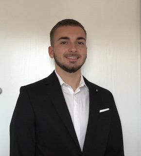
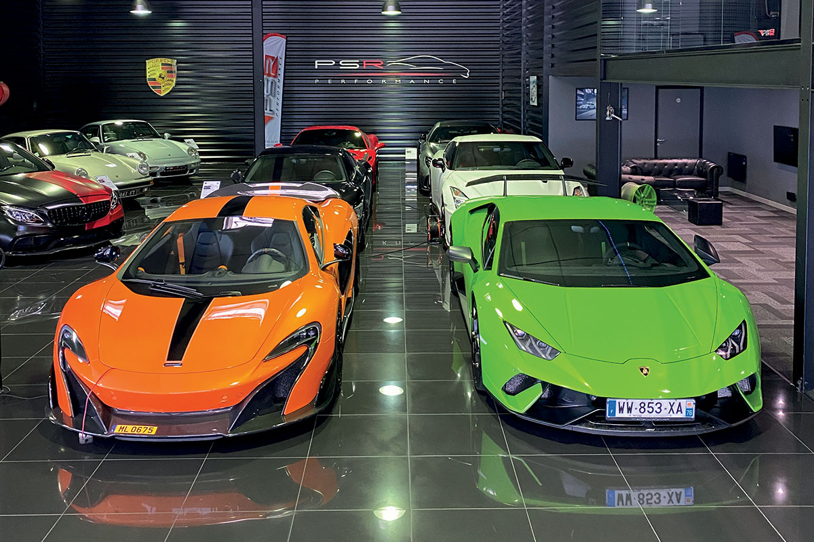
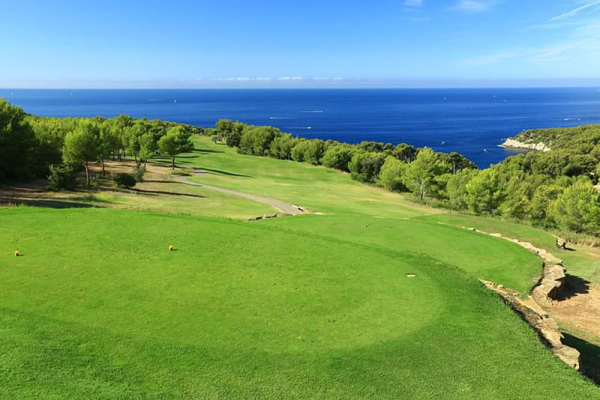

Baptiste Albertini
Passionate about autombile and motor sports 🚗, I am also interested in management and business creation. Currently in the third year of business school at Kedge Business School, I am in the start-up and entrepreneurship option, where I have recently learned to code, which interests me particularly. An example of success in the automotive industry is for me MS Motors, a company that I have admired for almost 10 years.
Discover MS MotorsAutombile and motor sports 🏎

I am passionate about automobile and motor sports. Since I was young, the automobile has been something that fascinates me and for which I have found a real passion. I very often go to events on the circuits, in particular to the Paul Ricard circuit in Le Castellet, to car shows or races. With all the knowledge I have in this field and my strong passion, my career choice is therefore towards the automobile or motor sports.
Management and business creation 🏭
I am very interested about management and business creation. Being able to manage your own schedule, your own work and your own organization are notions that agree with my personality. I like freedom and autonomy and can't stand being limited in what I do. I prefer to let my ideas express themselves freely and give the best of myself. For me, starting my own business and being able to manage all or even a large part of it is the best way to meet this need.
Golf ⛳️
I am passionate about golf. I have been playing golf for over 10 years. It's a sport that helps me a lot mentally because it requires a lot of thinking and self-control. Being in such a setting also allows me to recharge my batteries and enjoy the benefits that nature brings.